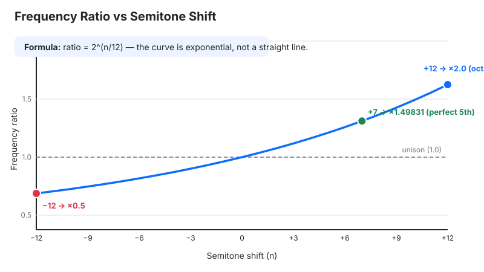
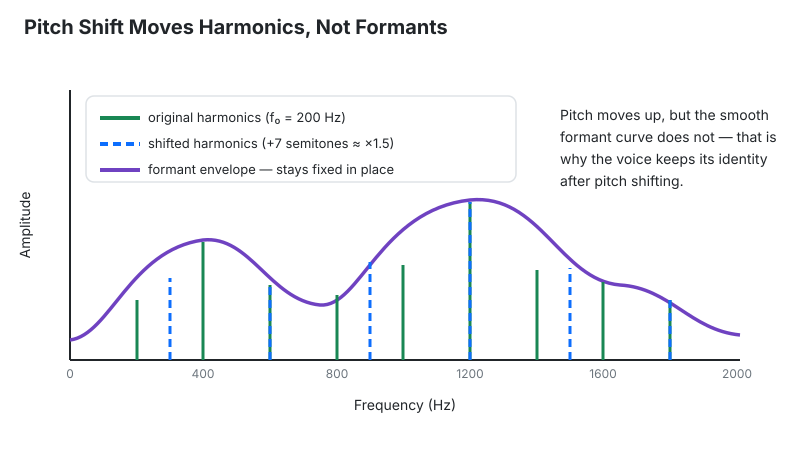

Last updated: October 23, 2026 · Written by the Pitch Detectors Editorial Team
A pitch shift calculator converts a pitch change — stated in semitones and cents — into the exact frequency ratio, the varispeed tempo change, and the duration factor. Enter +3 semitones and every frequency multiplies by 1.18921; repitch a 120 BPM loop tape-style and it plays at 142.70 BPM. Run the math here first, then use the guide below to pick the right algorithm for vocals, samples, and DJ work.
A pitch interval is a ratio, not a fixed number of Hertz: moving from 220 Hz to 440 Hz sounds like the same musical distance as moving from 440 Hz to 880 Hz, because both are a 2:1 ratio — one octave. Western music divides each octave into 12 equal semitones, so one semitone is the twelfth root of 2, a ratio of about 1.0594631.
Pitch shifting differs from transposing MIDI notes (note data, not recorded audio) and from pitch correction (nudging off-key notes toward the nearest target). Shifting moves the entire signal — fundamental and harmonics — by one ratio: the calculator's most important output.
The calculator takes a semitone shift plus an optional cents fine-tune and returns four results: total semitones, frequency ratio, varispeed speed change, and duration factor. It computes the total shift as total = S + C / 100, the ratio as r = 2^(total / 12), the varispeed tempo change as (r − 1) × 100%, and the duration factor as 1 / r. Positive values shift up; negative values shift down.
The tiles show total semitones to two decimals with its sign, the ratio to five, the speed percentage to two, and the duration multiplier to four. Results recalculate as you type, and a blank field counts as zero. The calculator has no frequency or BPM input by design: multiply any frequency by the ratio, or your track's BPM by the speed factor, to apply a result. The ratios were checked against published equal-temperament ratio tables for all 25 shifts from −12 to +12 — fifth 1.49831, tritone 1.41421, octave exactly 2.00000 — and matched in every case. Last reviewed: October 2026.
One formula drives the whole calculator:
Where S is the semitone shift, C the cents offset, r the frequency ratio, and f_in / f_out the original and shifted frequencies. Reference points: +12 semitones doubles every frequency; −12 halves them.
Example 1 — fitting a vocal sample to your beat's key. A vocal hook in A minor must join a track in C minor: +3 semitones. Ratio: r = 2^(3/12) = 1.18921. In varispeed (Re-Pitch) mode the tempo rises by (1.18921 − 1) × 100 = +18.92%, so a 120 BPM vocal becomes 142.70 BPM. To hold 120 BPM instead, use a time-independent mode (Complex Pro): tempo stays, pitch still moves.
Example 2 — synth unison detune and beat rate. Oscillator 2 sits +18 cents above oscillator 1 at 220 Hz. Ratio: r = 2^(18/1200) = 1.01045, so oscillator 2 plays at 222.30 Hz. The pair beats at |222.30 − 220| = 2.30 pulses per second — a slow chorus wobble with no dissonance.
Example 3 — DJ turntable math. A Technics-style pitch fader moves ±8% of playback speed. +8% gives a ratio of 1.08, which is 12 × log₂(1.08) = +1.33 semitones (+133.24 cents). −8% gives 12 × log₂(0.92) = −1.44 semitones (−144.35 cents). The range is asymmetric — equal speed percentages never produce equal semitone steps, because the ratio is exponential.
The four tiles answer four production questions. Total semitones goes into a DAW transpose field. Frequency ratio is the mathematical core — multiply any frequency by it. Varispeed speed shows the tape/vinyl result (+5.95% for one semitone up), and duration factor shows the length change (0.5 = half the time).
Use this table to judge how far a shift can go:
| Shift amount | Vocals (formant-corrected) | Samples (varispeed) |
|---|---|---|
| ±1–2 st | Clean — tuning fixes and harmonies | Clean; tempo moves +5.95% up, −5.61% down |
| ±3–4 st | Good — slight timbre change, still natural | Fine; tempo moves +18.92% up, −15.91% down |
| ±5–7 st | Noticeable — entering obvious effect territory | Dramatic slowdown or speedup |
| ±8–12 st | Special effect — chipmunk up, monster-voice down | Half or double speed at ±12 st |

Every semitone shift from unison to +12 has a fixed ratio and a fixed varispeed speed change:
| Shift | Interval | Frequency ratio | Varispeed speed |
|---|---|---|---|
| 0 st | Unison | 1.00000 | 0.00% |
| +1 st | Minor 2nd | 1.05946 | +5.95% |
| +2 st | Major 2nd | 1.12246 | +12.25% |
| +3 st | Minor 3rd | 1.18921 | +18.92% |
| +4 st | Major 3rd | 1.25992 | +25.99% |
| +5 st | Perfect 4th | 1.33484 | +33.48% |
| +6 st | Tritone | 1.41421 | +41.42% |
| +7 st | Perfect 5th | 1.49831 | +49.83% |
| +8 st | Minor 6th | 1.58740 | +58.74% |
| +9 st | Major 6th | 1.68179 | +68.18% |
| +10 st | Minor 7th | 1.78180 | +78.18% |
| +11 st | Major 7th | 1.88775 | +88.77% |
| +12 st | Octave | 2.00000 | +100.00% |
Negative shifts invert these ratios and reverse the speed change: −1 st gives 0.94387 (−5.61%), −7 st gives 0.66742 (−33.26%), and −12 st gives 0.50000 (−50.00%). Duration is the reciprocal — 1 ÷ ratio, the fourth tile.
A common mistake: adding pitch-shift percentages. Shifting up 6 semitones is a ×1.41421 ratio (+41.42% speed). Twice gives 1.41421 × 1.41421 = 2.0 — exactly one octave, +100% speed — not "+82.84%."
Detuning has the same trap: two +50-cent shifts are each ×1.02930, and the pair multiplies to ×1.05946 — exactly one semitone. Whenever you stack shifts, multiply the ratios, not the percentages. The ratio tile is the number to multiply; the percentage tile describes a single shift only.
A speed change converts back to semitones with st = 12 × log₂(rate), where rate is the new speed divided by the old speed. The calculator runs semitones → ratio; producers often hold the other end — a fader percentage or a target tempo — and need the interval it costs.
Worked example — the DJ tempo match. A track at 122 BPM must reach 126 BPM. Rate = 126 ÷ 122 = 1.0328, so st = 12 × log₂(1.0328) = +0.56 semitones (+55.85 cents) — the pitch cost of the tempo match.
Worked example — recording for a pitch-up. To pitch a vocal up +3 semitones and land at 140 BPM, record it 3 semitones lower at 140 ÷ 1.18921 = 117.73 BPM. After the shift, tempo and pitch arrive together.
Every major DAW ships several pitch-shift engines, and picking the wrong one is the top cause of bad-sounding shifts. Match the algorithm to the material: monophonic for single voices, polyphonic for chords and mixes, transient-preserving modes for drums, varispeed for tape-style effects. Under the hood, many of these engines license zplane élastique — Ableton, Cubase, Studio One, FL Studio, Reaper, Pro Tools, Bitwig — each wrapping it in its own mode names.
| DAW | Mode | Use it for |
|---|---|---|
| Ableton Live | Re-Pitch | Tape-style varispeed |
| Beats | Drums and loops — protects transients | |
| Tones | Monophonic material — bass, lead lines | |
| Texture | Pads and atmospheric sounds | |
| Complex | Full mixes and complex material | |
| Complex Pro | Vocals and full mixes — Formants and Envelope controls | |
| Logic Pro | Flex Pitch | Note-level pitch editing of monophonic recordings |
| Flex Time: Monophonic | Vocals, bass, single-line instruments | |
| Flex Time: Polyphonic | Chords, full mixes | |
| Flex Time: Slicing | Drums — chops at transients | |
| Flex Time: Rhythmic | Rhythmic loops and percussion parts | |
| Flex Time: Speed | Tape-style varispeed for the whole project | |
| Pro Tools | Elastic Audio: Monophonic | Solo instruments and voices |
| Elastic Audio: Rhythmic | Drums and loops — protects transients | |
| Elastic Audio: Polyphonic | General instrument tracks | |
| X-Form | Offline render — highest quality |
For the cleanest result on a finished track, render the shift offline (X-Form, or a bounced Complex Pro clip) instead of leaving a real-time warp active.
As a singer changes notes, the vocal tract — throat, mouth, nasal cavity — keeps its physical size. Its resonant bands, called formants (F1–F4), stay fixed while the cords change pitch. That fixed pattern is why a voice sounds like that person.
Naive pitch shifting moves everything together: pitch and formants. Shift a vocal up and the formants land where a much smaller vocal tract would put them — the classic "chipmunk effect," a tiny childlike voice. Shift down: a cavernous "monster" voice. Formant-preserving algorithms split the signal into pitch excitation and spectral envelope, move only the pitch, and leave the formants anchored — the shifted vocal still sounds like the same singer.
Creative producers shift formants deliberately: pitch a vocal up, push formants down (Complex Pro's Formants knob, SoundToys Little AlterBoy), and the harmony turns androgynous yet sits naturally in the mix. The ratio says how far the notes move; the formant setting decides whether the voice moves with them.

| Technique | What changes | Use it when… |
|---|---|---|
| Time-independent pitch shift | Pitch only; tempo and length stay fixed | Fitting a sample to a key without touching tempo |
| Varispeed / resampling | Pitch, tempo, and length together | Tape/vinyl character — classic hip-hop chops |
| Time-stretching | Tempo/length only; pitch stays fixed | Matching a loop's BPM without changing its key |
| MIDI transposition | Note data only — no audio is processed | Working with virtual instruments; perfectly clean at any interval |
| Pitch correction | Micro-adjustments toward target notes | Fixing an out-of-tune performance (Auto-Tune, Melodyne) |
For tempo-only work without pitch change, see the BPM to speed converter; for measuring small tuning offsets in cents, use the cents calculator.